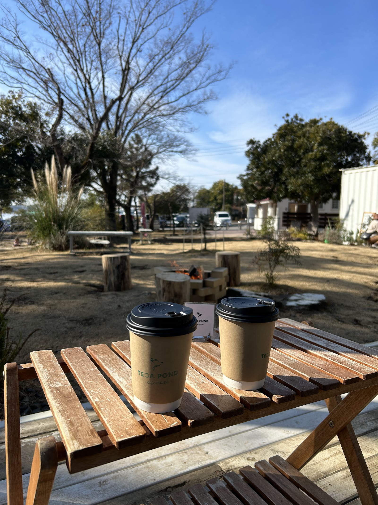
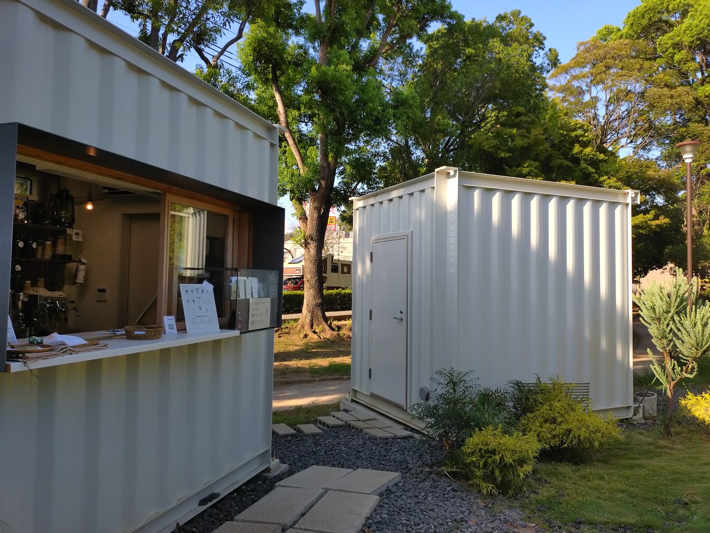
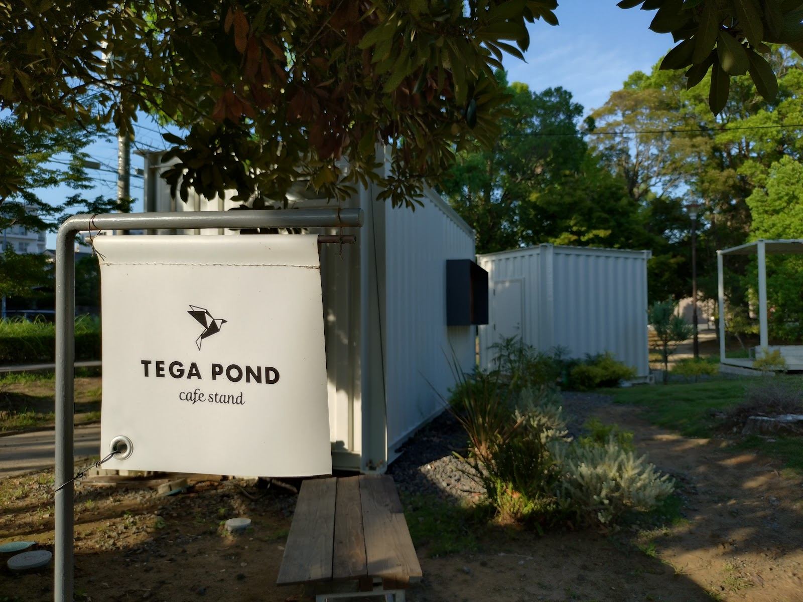

CONCEPT
Photo: Shupa Shupa(Google マップ)
01
手賀沼公園の自然の中で過ごすひととき
手賀沼公園の中にあるTEGA POND cafe standでは、公園の緑と水辺の風景に囲まれながら過ごす時間そのものが、お店の魅力のひとつです。公園内にはベンチがあり、天気の良い日には焚き火のそばで暖をとりながらひと休みすることもできます。屋内の店舗では味わえない、外の空気を感じながらのんびりと過ごせる開放感が、このお店ならではの時間の流れをつくっています。

02
コンテナを改装した小さなカフェスタンド
TEGA POND cafe standは、コンテナを改装した小さなスタンド形式の店舗です。大きな建物ではなく、公園の風景に自然に溶け込むコンパクトな佇まいで、カウンター越しに商品を受け取るオープンカフェのスタイルをとっています。公園を散歩する途中でふらっと立ち寄れる、肩肘の張らない距離感も、この小さな店舗ならではの持ち味です。

03
我孫子で親しまれる「吉岡茶房」の2号店として
TEGA POND cafe standは、我孫子市内で親しまれているカフェ「吉岡茶房」の2号店として営業しています。手賀沼公園という開かれた場所を舞台に、公園を訪れる方々にひと休みの時間を届けているお店です。まちなかのカフェとはまた違った、公園ならではの開放的な雰囲気の中で、ゆったりとした一杯の時間をお楽しみいただけます。